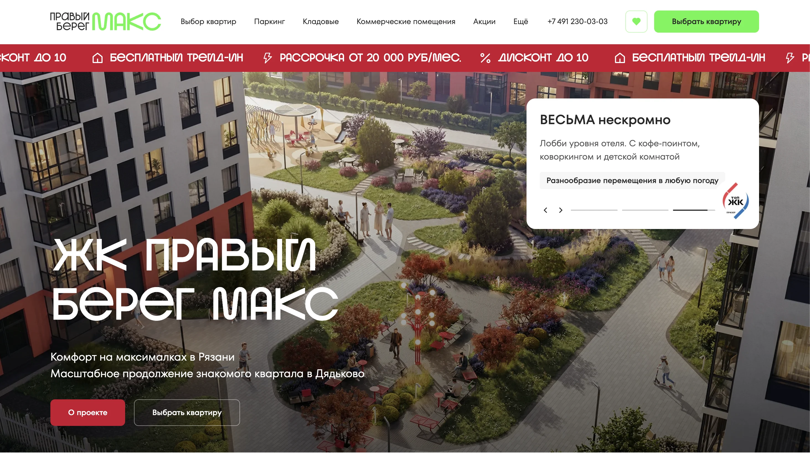
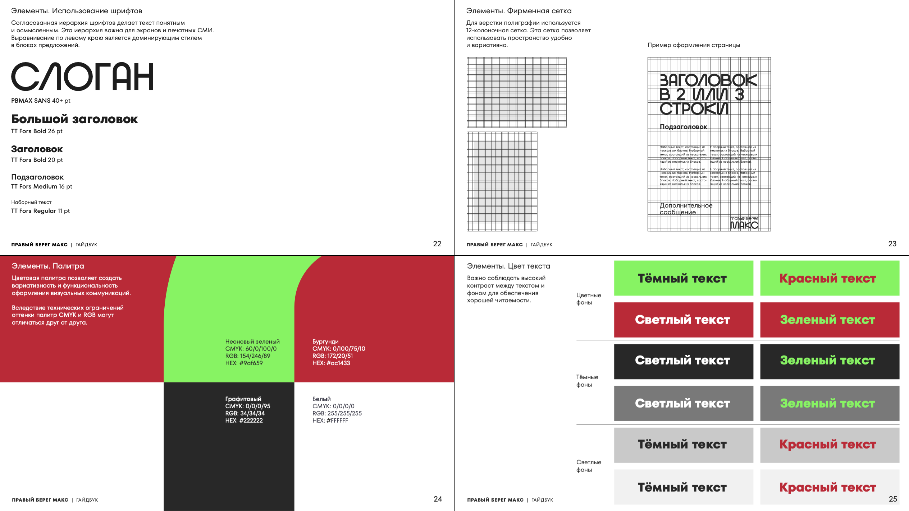
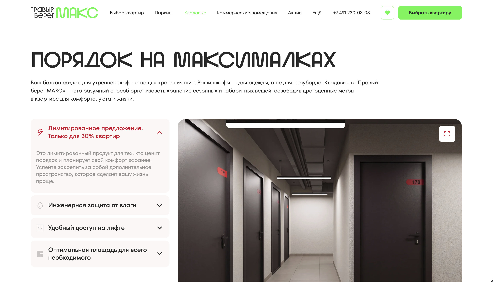

Брендбука не было: у клиента были только рендеры и набор красных, неоновых и зелёных элементов. Я пришла к его дизайнеру со своими идеями и предложила сначала договориться о концепции. За неделю мы вдвоём придумали её: яркие неоновые цвета, зигзаг из буквы «М», «закорючки» по сайту и брендовый голос — «ВЕСЬМА нескромно».

Дизайнер клиента сделала под сайт кастомный шрифт, а концепцию клиент забрал во всю рекламу. Из неё вырос полноценный гайдбук — хотя мы были для клиента подрядчиком.

Сначала проработали структуру и тексты, потом дизайн. Кроме обязательных разделов сайта ЖК — отдельные страницы паркинга, кладовых и коммерческих помещений.